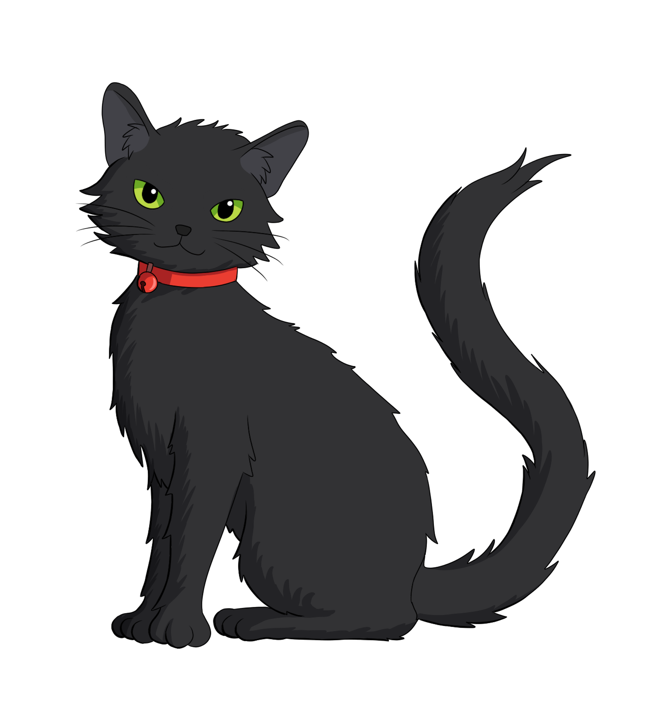

Siyang Liu's Homepage

Welcome to my homepage! I'm a second year PhD student at University of Southern California. My advisor is Sheel Ganatra.
My research interest is symplectic geometry. For more information, see the "research" page.
"Wildcat" is my name for most of my social accounts, and I'm happy with any nicknames generated from this(if it sounds good).
Education
| Year | School | Degree | Description |
| 2020-Now | University of Southern California | PhD in Mathematics | Second year PhD student. |
| 2016-2020 | Sun Yat-Sen University | Bachelor in Science | In mathematics; Advisor: Prof. Jianxun Hu; Thesis: The Arnold Conjecture for Lagrangian Intersections. |
Seminars & Notes
Here is some of my unpublished notes(Chinese or English) and links to seminars.
Notes(English):
-
Abstract:
In this thesis we give an exposition of Arnold's conjecture on Lagrangian intersections, which was one of the main topics in late 1980s. We will mainly focus on Floer's proof under the topological condition $\pi_2 (P,L)=0$, given in his series of papers, with some slight generalizations made by precessors in most of the parts of the proof.
In the first section we give a brief introduction to the history of Arnold conjecture, including its origin: the Poincar\'e's last geometric theorem, how it was proposed by Arnold in his 1965 paper \cite{Arnold1965}, and a summary of his first exposition on this problem.
Then we present Floer's approach to this Arnold conjecture. In the second section we apply variation to an action functional and derive the Cauchy-Riemann equation on a pseudo-holomorphic strip, which indicates the trajectories associated to this action functional. We prove that this trajectories tend to critical points as expected.
The third section is the main part of this paper. We construct the Floer chain complex and prove that this is exactly a chain complex so that we could take the cohomology. This step requires much techniques from non-linear analysis and some study of non-linear elliptic partial differential equations. Some of the technical part is presented in the appendix.
Finally in the last section, we show that the given cohomology is independent of the choice of some generic structures along the process we construct the chain complex, so is actually a topological invariant. We could then reduce to the easiest case of a ``classical'' phase space and prove that the Floer cohomology group is isomorphic to the Morse cohomology group, hence proving the Arnold conjecture. - I'm attending the Symplectic Reading semianr at USC, with websites here.
Abstract:
This is a note for the seminar in USC, which summarizes the main results of Oh's paper Symplectic Topology as the Geometry of Action Functional, I and hopes to explain the technical details of this paper as well as its applications, the famous Oh's spectral invariant.Abstract:
This is about Seidel's series of papers on the large project trying to prove the homological mirror symmetry proposal on \(\mathbb{CP}^2\). There're many interesting phenomena and geometric topological theories involved, and I'm trying to explain them as my term paper for MATH 641.
Seminars:
- Spring 2022
- Summer 2022
- Fall 2022